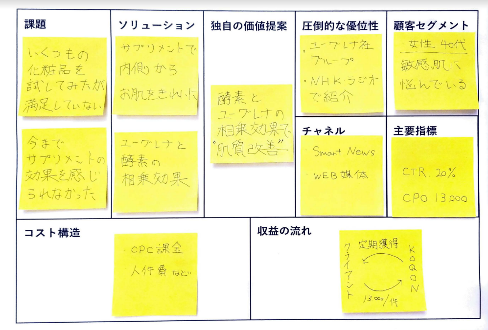
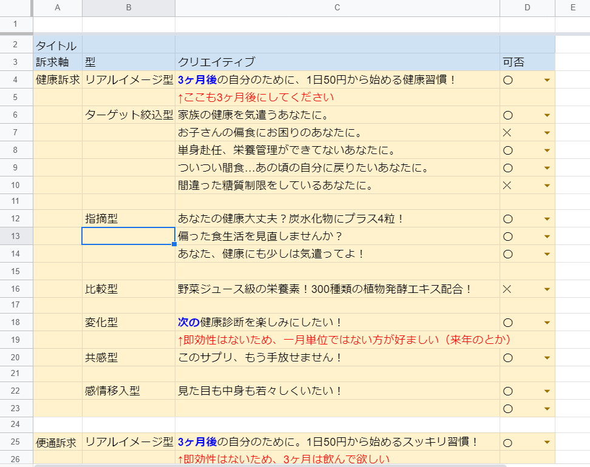

WEBMARKETER
Role
After a few months, we got this clients selling health product lines and I needed to join this team. They only used their online store and we helped their online advertisement.
Timeline
a year
Strategy
I started off with making this canvas to get the inspiration of how to appeal to customers. And then I dug into the customers’ needs. Products are already there so I was struggling to differentiate their product from a competing one.

Action
Finally I found some appeal points, made creatives and run social paid advertisement. Once I deployed the paid ad, these platforms quickly optimize that. So all I need is to keep adding creatives. Off course, I did analyze our creative and maximized opportunity.

I learned a lot from this experience. But bottom line is the machine is amazing. Im not sure these jobs stay around for the next 10 years. And this got me thinking of my future career plan.